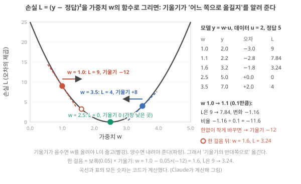
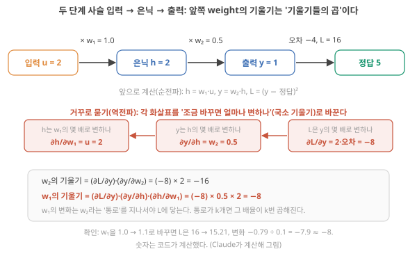
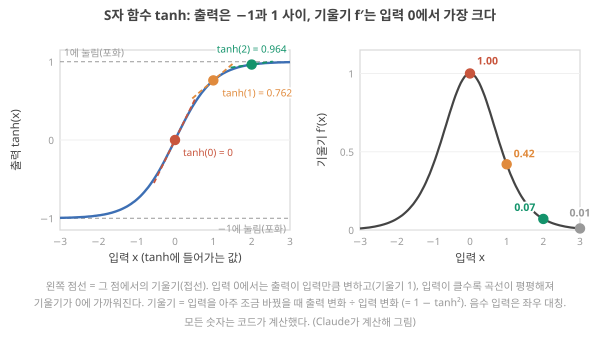
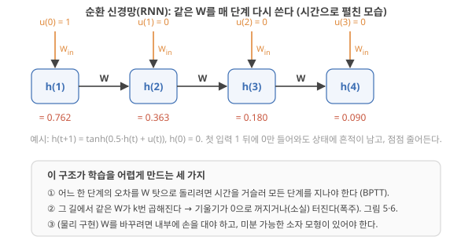
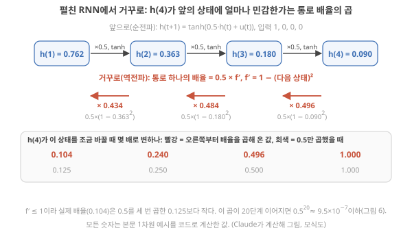
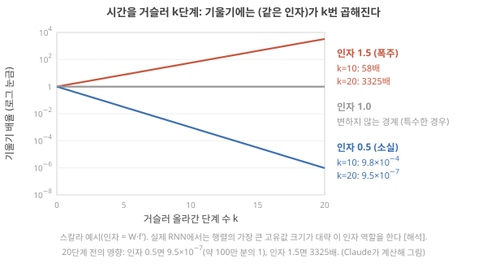
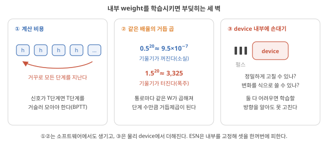

Day 11. 학습·기울기·RNN, 그리고 BPTT가 어려운 이유
Phase 2 · RC는 왜, 어떻게 작동하는가
이번 질문 신경망은 어떻게 학습하고, 시간을 거슬러 올라가는 학습은 왜 어려운가?
왜 배우나 readout만 학습하는 이유를 알아야 device 내부를 학습시키지 않는 설계가 읽힌다.
오늘의 장면 데이터·weight → 손실 줄도록 weight 이동 → 기울기 소실·폭주 또는 학습 weight
오늘 반드시 학습 = 손실이 줄도록 weight를 기울기 반대쪽으로 옮기는 일. RNN은 같은 배율이 거듭 곱해져 기울기가 소실·폭주한다.
나중에 봐도 됨 tanh 세부 · 고유값·Pascanu 조건 · 행렬 계산 · epoch
넘어가는 기준 '오늘 반드시'를 내 말로 말할 수 있으면 충분합니다.
이후 쓰이는 곳 Day 13–14 readout 학습 · Day 15–16 fading memory · Day 21–22 ESN 실습
지난 학습 복습
지난 학습 단위(Day 10 · '계산한다'의 조건과 증거 사다리)의 핵심을 다른 예로 확인합니다. 고르는 즉시 맞았는지와 이유가 보입니다. 틀려도 아래 학습자료는 그대로 열려 있고, 틀린 문제에는 다시 볼 곳이 붙습니다.
사전 테스트 (선택)
사전 테스트 펼치기 · 배우기 전에 짐작해 보는 문제 (선택)
학습자료
오늘의 질문 "RC란 무엇이고 어떤 문제를 풀려고 나왔나? 뉴로모픽과 어떤 관계인가?"는 다섯 개의 작은 질문으로 나뉩니다. 앞을 알아야 뒤가 읽히니 순서대로 가세요. 특히 0번은 "신경망을 학습시킨다"는 말을 처음 듣는 사람을 위한 계단입니다. 이미 아는 사람에게는 복습이지만, 뒤에서 RNN 학습이 왜 어려운지 설명하는 "같은 인자가 k번 곱해진다"는 문장은 이 계단 없이는 읽히지 않습니다. ★ 기초 계단부터 BPTT까지의 목표는 역전파 공식을 처음부터 끝까지 유도하는 것이 아니라, 작은 곱 예제(2 × 0.5 × (−8), 0.434 × 0.484 × 0.496)가 무슨 뜻인지를 잡는 것입니다. 단계 상자의 계산을 모두 손으로 따라가지 못해도, 그 곱의 뜻을 말할 수 있으면 다음 구간으로 가도 됩니다.
이번 주제에서 답할 질문 — 아래 학습 구간들이 차례로 답합니다.
- 신경망의 '모델·weight·학습·기울기·역전파'는 각각 무슨 뜻인가? (숫자 하나짜리 예로)
- 시계열을 다루는 신경망(RNN)은 무엇이고, 왜 학습시키기 어려운가?
- ESN(2001)과 LSM(2002)은 무엇을 포기해서 그 어려움을 피했나?
- 그 둘이 왜 'reservoir computing'이라는 하나의 이름이 됐고, 왜 물리 device로 옮기기 좋은가?
- 물리 reservoir computing(PRC)은 Day 1–2의 네 줄기(와 회색지대) 중 어디에 있고, 무엇을 약속하고 무엇을 약속하지 않나?
0. 기초 계단: 모델, weight, 학습, 기울기, 역전파
상황. 논문에서 "내부는 학습시키지 않고 출력층(readout)만 학습한다"는 문장을 자주 만납니다. 왜 내부를 학습시키지 않을까요? 내 device로 시계열을 처리하는 네트워크를 만든다면, 학습은 device 안의 숫자(conductance 같은 값)를 오차가 줄어드는 쪽으로 조금씩 고치는 일입니다. 그러려면 (1) 오차가 줄어드는 방향(기울기)을 알아야 하고, (2) 시간 순서 입력이면 그 방향을 시간을 거슬러 계산해야 하고, (3) device 내부를 실제로 그만큼 정밀하게 고칠 수 있어야 합니다. 기초 계단부터 BPTT까지는 (1)(2)가 무엇이고 왜 어려워지는지를 숫자 하나짜리 예로 보고, 이어서 '물리 device의 세 번째 벽'에서 (3)을 봅니다. 그것이 ESN 이후 "readout만 학습"하는 이유입니다.
왜 지금? 이 문장에는 '학습', '기울기', '역전파'가 들어 있는데, 처음 듣는 사람에게는 셋 다 뜻이 없는 단어입니다. 숫자 하나짜리 모델로 손 계산이 되는 것만 먼저 잡습니다.
어디에 쓰이나? RC 논문이 "기울기 소실·폭주를 피한다", "내부는 고정하고 readout만 학습한다"고 쓸 때, 그 말이 무엇을 피하는 것인지 읽는 데 씁니다.
끝나면 할 수 있는 것. "모델이 무엇이고, 학습이 무엇을 고치는 일이며, 기울기가 왜 '어느 쪽으로 옮길지'를 알려 주고, 역전파에서 왜 기울기들이 곱해지는지"를 숫자 하나짜리 예로 직접 계산하며 말할 수 있다.
오늘의 본론은 "RNN은 왜 학습이 어렵고, RC는 그 어려움을 어떻게 피했나"입니다. 그런데 이 문장에는 '학습', '기울기', '역전파'라는 말이 들어 있고, 셋 다 처음 듣는 사람에게는 뜻이 없는 단어입니다. 이 구간은 신경망의 수학 전체가 아니라, 오늘 필요한 네 가지만 작은 숫자로 다룹니다. 모델이 무엇인지, 학습이 무엇인지, 기울기가 무엇인지, 역전파가 무엇인지. 네 가지 모두 숫자 하나짜리 모델로 손 계산이 됩니다.
모델: 입력을 받아 weight를 곱해 출력을 내는 규칙
온실에 온도 센서가 하나 있다고 합시다. 기준보다 온도가 얼마나 높은지를 \(u\)(단위 °C)라고 하고, 이 값으로 경보 점수 \(y\)를 만들려 합니다. 가장 단순한 규칙은 "온도 편차에 어떤 숫자를 곱한다"입니다.
\[ y = w \times u \]
\(w = 1.5\)로 정해 두고 온도 편차 \(u = 2\) °C가 들어오면 \(y = 1.5 \times 2 = 3\)점입니다. 이 규칙 전체, 즉 "숫자를 받아서 정해진 방식으로 다른 숫자를 내는 것"을 모델(model)이라고 부릅니다. 들어오는 숫자 \(u\)가 입력(input), 나오는 숫자 \(y\)가 출력(output), 그리고 모델이 안에 들고 있는 숫자 \(w\)가 weight입니다. Weight는 "입력을 얼마나 중요하게 볼지"를 정하는 숫자이고, 모델이 하는 일은 결국 weight를 곱하는 것입니다. 수학에서는 "입력을 넣으면 출력이 하나로 정해지는 규칙"을 함수(function)라고 부르는데, 모델도 함수입니다. 2를 넣으면 3이 나오고, 4를 넣으면 6이 나옵니다.
신경망(neural network)은 이런 "곱해서 더하는" 규칙을 수백만 개 이어 붙이고, 그 사이사이에 S자 모양의 함수를 끼워 넣은 큰 모델입니다(S자 함수가 무엇이고 왜 끼우는지는 이 구간 끝 역전파 상자에서 숫자로 봅니다). 아래에서 두 개를 이어 붙인 예가 나오고, 그보다 큰 것은 구조가 같을 뿐입니다.
입력이 여럿이면: 벡터, 행렬, weight 행렬
짧은 복습. 벡터는 숫자 목록, 행렬은 숫자 표이고, 행렬–벡터 곱은 "행 하나와 입력을 같은 자리끼리 곱해 더하면 출력 하나"입니다. 예: Day 3의 2×2 예에서 weight 행 1이 \((1, 3)\)이고 입력이 \((2, 1)\)이면 출력 하나는 \(1\times2 + 3\times1 = 5\)입니다. 행이 둘이면 출력도 둘이고, 행마다 같은 계산을 합니다. '\(N\times N\) 행렬'은 '행 \(N\)개, 열 \(N\)개인 표'(행 수 × 열 수)라는 뜻입니다. 오늘 식의 \(W\,h(t)\)가 바로 이 계산이고, 뒤의 RNN 구간에서 상태 두 개짜리 예로 직접 해 봅니다. 처음 설명은 벡터·행렬과 원소, 입력 벡터, weight 행렬에 있습니다.
벡터·행렬 설명 다시 펼치기 (Day 3–4의 2×2 예로 출력 두 개 계산)
센서가 둘(온도 편차 \(u_1\), 습도 편차 \(u_2\))이고 출력도 둘(경보 점수 \(y_1\), 환기 점수 \(y_2\))이라면, 출력마다 weight가 입력 수만큼 필요합니다. 숫자를 순서대로 나열한 목록 \((u_1, u_2)\)를 벡터라 부르고, weight를 행(row)·열(column)로 배열한 표를 행렬이라 부르며, 표 안의 숫자 하나하나를 원소라고 합니다. 규칙은 하나입니다. 행 하나가 출력 하나의 weight 목록이고, 출력은 "행과 입력을 같은 자리끼리 곱해서 더한 것"입니다. 입력 \(\mathbf{u} = (2, 1)\)에 행렬 \(W\)의 행 1이 \((1, 3)\), 행 2가 \((2, 0.5)\)라면
- \(y_1 = 1 \times 2 + 3 \times 1 = 2 + 3 = 5\)
- \(y_2 = 2 \times 2 + 0.5 \times 1 = 4 + 0.5 = 4.5\)
이 계산을 \(\mathbf{y} = W\mathbf{u}\)로 줄여 씁니다. 뒤에 나올 RNN 식의 \(W\,h(t)\)가 바로 이것입니다. 상태 \(h(t)\)가 숫자 목록이고, \(W\)가 그 목록에 곱하는 weight 표입니다. 이 구간에서는 숫자 하나짜리 모델(\(w\) 하나)로 모든 것을 설명하고, 여러 개가 되어도 "곱해서 더한다"가 반복될 뿐이라는 것만 기억하면 됩니다. (행렬 계산을 더 자세히 따라가고 싶으면 Day 3–4의 2×2 예에 같은 예가 단계별로 있습니다. 보충이며 오늘 필수는 아닙니다.)
학습: weight를 데이터에 맞게 고치기, 그리고 오차와 손실
위의 \(w = 1.5\)는 누가 정했을까요. 아무도 모릅니다. 그래서 데이터로 정합니다. 과거 기록에 "온도 편차 2 °C였던 날, 경보 점수는 5점이 맞았다"가 있다고 합시다. 즉 입력 2에 대한 정답(target, 논문에서는 label이라고도 씀)이 5입니다. 지금 모델의 weight가 \(w = 1.0\)이면 출력은 \(y = 1.0 \times 2 = 2\)이고, 정답 5와 다릅니다.
이 차이를 오차(error)라 하고 \(y - \text{정답} = 2 - 5 = -3\)으로 적습니다. 오차에는 부호가 있어서(모자라면 음수, 넘치면 양수) 그대로 "얼마나 틀렸나"의 크기로 쓰기 불편합니다. 그래서 제곱합니다. \((-3)^2 = 9\). 이 값을 손실(loss)이라 하고 \(L\)로 적습니다.
\[ L = (y - \text{정답})^2 \]
- 왜 지금 필요한가: "얼마나 틀렸나"를 부호 없는 숫자 하나로 만들어야 "줄인다"는 말을 할 수 있다.
- 기호: \(y\)는 모델 출력, 정답은 데이터가 준 값. 데이터가 여러 개면 각각의 손실을 더하거나 평균한다.
- 단위: 출력 단위의 제곱(점²). 신경망에서는 보통 무차원.
- 계산 순서: 출력을 구한다 → 정답을 뺀다 → 제곱한다.
- 결과의 뜻: 0이면 딱 맞음. 클수록 많이 틀림. 제곱이라 큰 오차 하나가 작은 오차 여럿보다 훨씬 크게 센다.
학습(training)이란 손실이 가장 작아지는 weight를 데이터로 찾아내는 일입니다. 이 예에서는 답이 보입니다. \(w = 2.5\)면 \(y = 5\), 손실 0. 하지만 weight가 100만 개면 눈으로 찾을 수 없습니다. 그래서 신경망은 다른 방법을 씁니다. "지금 \(w\)에서 어느 쪽으로 조금 움직이면 손실이 주는가"만 알아내서 그쪽으로 조금 옮기고, 이것을 수천 번 반복합니다. 그 "어느 쪽으로, 얼마나 민감하게"를 알려 주는 숫자가 다음의 기울기입니다.
"조금 바꾸면 얼마나 변하나": 기울기
손실 \(L\)은 \(w\)에 따라 달라지므로, \(w\)를 넣으면 \(L\)이 나오는 함수 \(L(w)\)입니다. 먼저 그림으로 봅니다. \(w\)를 0부터 5까지 바꿔 가며 손실(입력 2, 정답 5)을 계산해 이으면 그림 1의 골짜기가 됩니다.
그림 읽는 법. 그림 1(a)의 가로축은 weight \(w\)(단위 없음), 세로축은 손실 \(L\)(오차의 제곱)입니다. 검은 곡선의 높이가 그 \(w\)에서의 손실이고, (b)의 표는 곡선 위 몇 점의 숫자입니다(처음에는 (a)만 봐도 됩니다). 지금은 세 가지만 확인하세요. ① \(w = 1.0\)(빨간 점)에서 손실 9, ② 가장 낮은 곳(초록 점)은 \(w = 2.5\)에서 손실 0, ③ 빨간 점 근처의 곡선은 오른쪽 아래로 기울어 있다. 점선과 짧은 화살표는 바로 아래에서 계산할 '기울기'와 '옮길 방향'입니다.

이제 이 함수에게 묻습니다. \(w\)를 조금 올리면 \(L\)은 얼마나 변하나? 직접 해 봅니다(입력 2, 정답 5).
| \(w\) | \(y = w \times 2\) | 오차 \(y - 5\) | 손실 \(L\) | \(L\)의 변화 | 변화 ÷ \(w\)의 변화 |
|---|---|---|---|---|---|
| 1.0 | 2.0 | −3.0 | 9 | — | — |
| 1.1 | 2.2 | −2.8 | 7.84 | −1.16 (0.1만큼 올려서) | −1.16 ÷ 0.1 = −11.6 |
| 1.01 | 2.02 | −2.98 | 8.8804 | −0.1196 (0.01만큼 올려서) | −0.1196 ÷ 0.01 = −11.96 |
\(w\)를 0.1 올리면 \(L\)이 1.16 줄고, 0.01 올리면 0.1196 줍니다. "변화 ÷ 변화"의 비율이 −11.6, −11.96으로 어떤 값에 가까워집니다. 올리는 양을 한없이 작게 하면 이 비율은 정확히 −12가 되고, 이 극한의 비율을 \(w = 1.0\)에서의 기울기(gradient)라고 부릅니다(수학에서는 미분값(derivative)이라고도 하며, 기호로 \(dL/dw\)라고 씁니다). 그림 1에서는 빨간 점에 닿은 점선(접선)의 기울어짐이 이 −12이고, 오른쪽 아래로 기울었으니 음수입니다.
이 모델에서는 기울기를 공식으로도 쓸 수 있습니다.
\[ \frac{dL}{dw} = 2 \times (y - \text{정답}) \times u \]
- 왜 지금 필요한가: 표를 매번 만들지 않고 기울기를 바로 계산하기 위해. 신경망은 이런 공식을 모든 weight에 대해 자동으로 만든다.
- 기호: \(y - \text{정답}\)은 오차, \(u\)는 입력. 앞의 2는 제곱에서 나오는 수(아래 심화 상자에서 확인. 오늘은 공식을 쓸 줄만 알면 됩니다).
- 단위: 손실 단위 ÷ weight 단위.
- 계산 순서: 오차를 구한다(−3) → 2배 한다(−6) → 입력을 곱한다(−6 × 2 = −12).
- 결과의 뜻: "\(w\)를 아주 조금(\(\delta\)) 올리면 \(L\)은 약 \(-12\delta\)만큼, 즉 12배 빠르게 준다." 부호가 방향, 크기가 민감도다.
심화 · 공식의 2 × 오차 × 입력은 어디서 나오나 (제곱을 펼쳐 표와 맞추기)
\(\delta\)(델타)는 '아주 작은 양'을 뜻하는 기호입니다. \(w\)를 \(\delta\)만큼 올리면 출력은 \(u\delta = 2\delta\)만큼 오르고, 오차는 \(-3\)에서 \(-3 + 2\delta\)가 됩니다. 손실은 그 제곱이니 펼치면 \((-3 + 2\delta)^2 = 9 - 12\delta + 4\delta^2\). \(\delta = 0.1\)을 넣으면 \(9 - 1.2 + 0.04 = 7.84\)로 표와 같습니다. 손실의 변화 \(-12\delta + 4\delta^2\)를 \(\delta\)로 나누면 \(-12 + 4\delta\)이고, \(\delta\)를 0.1, 0.01로 줄이면 \(4\delta\) 부분이 0.4, 0.04로 줄어 비율이 \(-12\)에 다가갑니다(표의 −11.6 = −12 + 0.4, −11.96 = −12 + 0.04). 일반적으로 오차를 \(e\), 입력을 \(u\)라 하면 \((e + u\delta)^2 = e^2 + 2eu\delta + u^2\delta^2\)이므로 비율은 \(2 \times e \times u\)로 다가갑니다. 이것이 위 공식이고, 앞의 2는 제곱을 펼칠 때 가운데 항에서 나옵니다.
기울기의 반대쪽으로 한 걸음. 기울기가 음수라는 것은 "\(w\)를 올리면 \(L\)이 준다"는 뜻이므로 올려야 하고, 양수면 내려야 합니다. 즉 기울기의 부호와 반대쪽으로 옮깁니다. 얼마나 옮기나는 "보폭 × 기울기"로 정합니다. 보폭을 학습률(learning rate, \(\eta\))이라 부르는 작은 수로 둡니다. 한 걸음을 실제로 계산해 봅니다.
단계 1 — 방향. \(w = 1.0\)에서 기울기는 −12. 음수이므로 \(w\)를 올려야 \(L\)이 줍니다. (손실 곡선 위의 빨간 화살표가 오른쪽을 향하는 이유.)
단계 2 — 보폭. 학습률 \(\eta = 0.05\)로 두면 옮기는 양은 \(-\eta \times \text{기울기} = -0.05 \times (-12) = +0.6\). 새 weight는 \(w = 1.0 + 0.6 = 1.6\).
단계 3 — 확인. \(w = 1.6\)이면 \(y = 1.6 \times 2 = 3.2\), 오차 \(3.2 - 5 = -1.8\), 손실 \((-1.8)^2 = 3.24\). 손실이 9에서 3.24로 줄었습니다.
단계 4 — 반복. \(w = 1.6\)에서의 기울기는 \(2 \times (-1.8) \times 2 = -7.2\). 아직 음수이니 또 올립니다. \(w = 1.6 + 0.05 \times 7.2 = 1.96\), \(y = 3.92\), 손실 \((-1.08)^2 \approx 1.17\). 걸음을 거듭할수록 2.5에 다가가고, 가까워질수록 기울기가 작아져 걸음도 짧아집니다. Weight가 100만 개여도 하는 일은 같습니다. Weight마다 기울기를 구해 반대쪽으로 조금씩 옮깁니다. 이 절차를 경사 하강(gradient descent)이라고 부릅니다.
단계 5 — 보폭이 너무 크면. 같은 자리에서 \(\eta = 0.5\)로 두면 옮기는 양은 \(+6\), \(w = 7\), \(y = 14\), 손실 \((14 - 5)^2 = 81\). 9였던 손실이 81로 나빠집니다. 골짜기 바닥을 지나쳐 건너편 비탈로 튄 것입니다. "보폭 × 기울기"가 너무 크면 학습이 발산한다는 이 사실을 기억해 두세요. 뒤에서 RNN의 기울기 자체가 수천 배로 커지는 일(폭주)을 볼 때, 그것이 왜 치명적인지가 여기서 보입니다.
일반식으로 쓰면 weight 하나당
\[ w_{\text{새}} = w - \eta\,\frac{dL}{dw} \]
- 왜 지금 필요한가: 위 다섯 단계를 한 줄로. 신경망 학습의 거의 모든 방법이 이 식의 변형이다.
- 기호: \(\eta\)는 학습률(보폭, 무차원 또는 weight 단위 ÷ 기울기 단위), \(dL/dw\)는 그 weight의 기울기.
- 단위: weight 단위.
- 계산 순서: 기울기를 구한다 → 학습률을 곱한다 → 지금 값에서 뺀다(기울기의 반대쪽이므로).
- 결과의 뜻: 손실이 줄어드는 쪽으로 조금 옮긴 새 weight. 한 번이 아니라 수천 번 반복한다.
데이터가 여럿이면: 한 바퀴 = epoch. 지금까지는 데이터가 하나(입력 2, 정답 5)였습니다. 실제로는 정답이 붙은 예가 여러 개입니다. 하나를 더 둡니다. 입력 1, 정답 2.5(이것도 \(w = 2.5\)면 딱 맞습니다). 가장 단순한 방법은 데이터를 하나씩 보며 위의 한 걸음을 옮기는 것입니다(\(\eta = 0.05\)).
| 걸음 | 쓰는 데이터 | 기울기 \(2 \times (y - \text{정답}) \times u\) | 새 \(w = w + 0.05 \times (-\text{기울기})\) |
|---|---|---|---|
| 1 | 입력 2, 정답 5 | \(2 \times (2.0 - 5) \times 2 = -12\) | \(1.0 + 0.6 = 1.6\) |
| 2 | 입력 1, 정답 2.5 | \(2 \times (1.6 - 2.5) \times 1 = -1.8\) | \(1.6 + 0.09 = 1.69\) |
| 3 | 입력 2, 정답 5 | \(2 \times (3.38 - 5) \times 2 = -6.48\) | \(1.69 + 0.324 = 2.014\) |
| 4 | 입력 1, 정답 2.5 | \(2 \times (2.014 - 2.5) \times 1 = -0.972\) | \(2.014 + 0.0486 \approx 2.063\) |
가진 데이터를 모두 한 번씩 써서 걸음을 옮기는 한 바퀴를 epoch(에포크)라 합니다. 위 표에서 1–2걸음이 첫 번째 epoch, 3–4걸음이 두 번째 epoch입니다. 데이터가 1,000개면 한 epoch는 (하나씩 옮길 때) 1,000걸음이고, 학습은 보통 여러 epoch를 돕니다. 몇 epoch를 돌지도 학습률처럼 사람이 고르는 설정입니다. Day 4의 배치(함께 처리하는 입력 벡터의 수)와는 다른 말입니다. 배치는 '한 번에 몇 개를 함께 보나', epoch는 '전체 데이터를 몇 바퀴 돌았나'입니다. 여러 데이터의 기울기를 평균해 한 걸음을 옮기는 방법도 있고, 그때도 전체를 한 번 다 쓰면 1 epoch입니다. 표의 숫자는 Claude 계산
직접 바꿔 보기: 걸음 크기와 손실
위 손계산과 같은 손실 \(L = (2w - 5)^2\)(입력 2, 목표 5)에서, 한 걸음 크기 η(학습률: 기울기에 곱해 실제로 움직일 양을 정하는 수)를 바꿔 봅니다. 먼저 예상을 고른 뒤 '한 걸음'을 여러 번 눌러 보세요.
교육용 모형입니다. weight 하나, 데이터 하나짜리 손실이라 실제 신경망 학습(weight 수백만 개, 데이터 여러 개, 매 걸음 다른 표본)보다 훨씬 단순합니다. w는 −0.5–5.5, η는 0.01–0.3에서 고릅니다(단위 없음).
정적 예제. w = 1.0에서 시작해 다음 w = w − η × 기울기, 기울기 = 4(2w − 5).
| η | 지나온 w (5걸음) | 결과 |
|---|---|---|
| 0.05 | 1.0 → 1.6 → 1.96 → 2.176 → 2.306 → 2.383 | 바닥 2.5로 다가감 |
| 0.25 | 1.0 → 4.0 → 1.0 → 4.0 → 1.0 → 4.0 | 바닥을 사이에 두고 왔다 갔다 |
| 0.3 | 1.0 → 4.6 → −0.44 → 6.616 → −3.262 → 10.567 | 점점 멀어짐(발산) |
무슨 일이 있었나. 정적 예제의 '기울기 = 4(2w − 5)'는 위 공식 \(2 \times \text{오차} \times \text{입력}\)에 오차 \(2w - 5\), 입력 2를 넣은 것이고, \(4(2w-5) = 8(w - 2.5)\)로 고쳐 쓰면 '바닥(w = 2.5)까지의 거리 \((w - 2.5)\)의 8배'입니다. 그래서 한 걸음 가면 바닥까지의 거리는 \((w - 2.5) - \eta \times 8(w - 2.5) = (1 - 8\eta)(w - 2.5)\)가 됩니다. 즉 한 걸음마다 거리에 \((1 - 8\eta)\)가 곱해집니다(예: η = 0.05면 거리 −1.5가 0.6배인 −0.9로, w는 1.0 → 1.6). η = 0.05면 0.6배씩 줄어 바닥에 다가가고, η = 0.25면 −1배라 같은 높이에서 왔다 갔다 하고, η = 0.3이면 −1.4배라 점점 멀어집니다. 기울기는 방향(어느 쪽으로 가야 손실이 주나)과 가파른 정도를 알려 줄 뿐이고, 얼마나 갈지는 η가 정합니다. 너무 크면 골짜기를 건너뛰어 학습이 망가집니다. 이 숫자들은 이 한 가지 손실에 대한 Claude 계산이며, 다른 손실에서는 안전한 η의 범위가 다릅니다. '같은 수를 거듭 곱하면 1보다 작을 때 줄고, 1보다 클 때 커진다'는 이 모양은 뒤의 BPTT에서 걸음이 아니라 시간 단계마다 다시 나옵니다.
- w = 3.5에서 기울기는?
답
오차 2 × 3.5 − 5 = 2, 기울기 = 2 × 2 × 2 = +8. - η = 0.25로 w = 1.0에서 한 걸음 가면?
답
1.0 − 0.25 × (−12) = 4.0. 손실은 9로 그대로입니다.
위 모델(입력 2, 정답 5)에서 \(w = 1.0\), 학습률 \(\eta = 0.1\)로 한 걸음 가면 새 \(w\)는 얼마일까요? 손으로 먼저 계산하고 아래에서 확인하세요. 첫 문제는 본문 숫자의 확인, 둘째는 일부가 비어 있고, 셋째는 입력과 정답이 다른 새 문제입니다.
역전파: weight가 두 개 이어져 있으면 기울기는 '곱'이다
지금까지는 weight가 하나였습니다. 신경망은 weight가 이어져 있습니다. 가장 작은 예로 두 개를 잇습니다. 입력 \(u\)에 \(w_1\)을 곱해 중간 숫자 \(h\)를 만들고, 거기에 \(w_2\)를 곱해 출력 \(y\)를 만듭니다.
\[ h = w_1 \times u, \qquad y = w_2 \times h, \qquad L = (y - \text{정답})^2 \]
입력도 출력도 아닌 중간 숫자 \(h\)를 은닉(hidden) 값이라 부릅니다(바깥에서 안 보인다는 뜻일 뿐입니다). 숫자를 넣습니다. \(u = 2\), \(w_1 = 1.0\), \(w_2 = 0.5\), 정답 5. 앞으로 계산하면 \(h = 2\), \(y = 1\), 오차 \(-4\), 손실 16. 이렇게 입력에서 출력 쪽으로 계산해 가는 것을 순전파(forward pass)라고 합니다.
이제 학습을 하려면 \(w_1\)과 \(w_2\) 각각의 기울기가 필요합니다. \(w_2\)는 출력 바로 앞에 있어서 한 weight짜리 예와 같습니다. \(w_1\)은 다릅니다. \(w_1\)을 바꾸면 \(h\)가 바뀌고, \(h\)가 바뀌어야 \(y\)가 바뀌고, \(y\)가 바뀌어야 \(L\)이 바뀝니다. 즉 \(w_1\)의 영향은 \(w_2\)라는 통로를 지나서야 손실에 닿습니다.
미리 결론부터 말하면, 거쳐 가는 단계마다 "앞의 값을 조금 바꾸면 뒤의 값이 몇 배로 변하나"라는 배율(교과서 용어로 국소 기울기, local gradient)이 하나씩 있고, \(w_1\)의 기울기는 그 배율들을 곱한 것입니다. 이 곱 규칙을 연쇄 법칙(chain rule)이라 하고, 출력 쪽에서 입력 쪽으로 배율을 거꾸로 곱해 내려오며 모든 weight의 기울기를 구하는 절차를 역전파(backpropagation)라고 합니다. 이 상자의 목표는 공식 유도가 아니라 이 "곱"의 뜻을 숫자로 확인하는 것입니다. 아래 그림으로 전체를 먼저 보고, 단계별로 따라갑니다.
그림 읽는 법. 그림 2의 위 줄은 방금 한 앞으로 계산(순전파)입니다. 가운데 빨간 상자 세 개는 위의 화살표 하나하나를 "앞의 값을 조금 바꾸면 뒤의 값이 몇 배로 변하나"라는 배율로 바꾼 것이고, 맨 아래 상자는 그 배율들을 곱한 결과입니다. 상자 안에는 기울기가 \(d\) 대신 \(\partial\)(둥근 d, '편미분 기호'(partial derivative)라 부름)로 적혀 있습니다. 뜻은 같은 '조금 바꾸면 몇 배로 변하나'이고, 값이 여럿일 때 하나만 조금 바꾸고 나머지는 그대로 둔 채 잰 비율이라는 표시입니다. 예: \(\partial y/\partial h = w_2 = 0.5\)는 '\(w_2\)는 그대로 두고 \(h\)만 조금 바꾸면 \(y\)는 그 0.5배만큼 변한다'. 아래 단계 1–3이 빨간 상자를 오른쪽부터 하나씩 채우고, 단계 4가 맨 아래 곱을 숫자로 확인합니다.

단계 1 — 출력 쪽 배율(그림 2의 오른쪽 빨간 상자). 손실은 출력에 대해 얼마나 민감한가? \(y\)를 1에서 1.1로 올려 보면 오차는 \(-4\)에서 \(-3.9\), 손실은 16에서 15.21로 0.79 줄고, 0.1로 나누면 \(-7.9\)입니다. 올리는 양을 더 작게 하면 \(-8\)에 다가갑니다. 기울기 공식 \(2 \times \text{오차} \times \text{입력}\)에서 \(y\)를 직접 바꾸므로 '입력' 자리에 1을 넣은 것과 같아서 \(2 \times (-4) = -8\). "\(y\)를 조금 올리면 \(L\)은 그 8배로 준다."
단계 2 — \(w_2\)의 기울기(그림 2 맨 아래 첫 줄). \(y = w_2 \times h\)이므로 \(w_2\)를 조금 올리면 \(y\)는 그 \(h = 2\)배 오릅니다. 그러면 \(L\)은 그 \(-8\)배. 둘을 곱해 \(w_2\)의 기울기 \(= (-8) \times 2 = -16\).
단계 3 — \(w_1\)의 영향이 지나는 통로(가운데·왼쪽 빨간 상자). \(h = w_1 \times u\)이므로 \(w_1\)을 조금 올리면 \(h\)는 그 \(u = 2\)배 오릅니다. \(h\)가 오르면 \(y = w_2 \times h\)는 그 \(w_2 = 0.5\)배 오릅니다. \(y\)가 오르면 \(L\)은 그 \(-8\)배. 세 배율을 곱하면 \(w_1\)의 기울기 \(= 2 \times 0.5 \times (-8) = -8\).
단계 4 — 표로 확인. \(w_1\)을 1.0에서 1.1로 올리면 \(h = 2.2\), \(y = 1.1\), 오차 \(-3.9\), 손실 \(15.21\). 변화 \(-0.79\)를 0.1로 나누면 \(-7.9\). 공식의 \(-8\)과 맞습니다(0.1이 '한없이 작은' 양은 아니라 조금 다릅니다).
정리. 거쳐 가는 단계마다 "조금 바꾸면 그 몇 배로 변하나"라는 배율이 하나씩 있고, 앞쪽 weight의 기울기는 그 배율들을 전부 곱한 것입니다(연쇄 법칙). 출력 쪽에서 입력 쪽으로 이 곱을 거꾸로 모아 내려오는 것이 역전파이고, 그림 2의 아래 두 줄이 이 계산입니다.
앞쪽 weight일수록 곱이 길어진다. \(w_2\)의 기울기에는 통로가 없었고(\(-8 \times 2\)), \(w_1\)의 기울기에는 통로 하나(\(w_2 = 0.5\))가 끼었습니다. Weight가 셋 이어지면 맨 앞 weight의 기울기에는 통로 둘이 곱해지고, 스무 개 이어지면 열아홉 개가 곱해집니다. 통로의 배율이 0.5 안팎이면 \(0.5^{19}\), 1.5 안팎이면 \(1.5^{19}\). 앞쪽 weight의 기울기는 통로 배율의 거듭제곱으로 쪼그라들거나 터집니다. 뒤의 BPTT 구간은 이 문장에 "RNN에서는 통로가 시간 단계마다 하나씩 생기고, 배율이 매번 같은 \(W\)"라는 말을 보태는 것뿐입니다.
비선형 함수가 끼면: \(\tanh\).
왜 끼우나. 곱하기만 이어 붙이면 \(y = w_2 \times (w_1 \times u) = (w_2 w_1) \times u\)라서, weight를 몇 개 이어도 결국 '입력에 숫자 하나 곱하기'와 같습니다(\(w_1 = 1.0\), \(w_2 = 0.5\)인 위 사슬은 \(w = 0.5\) 하나짜리 모델과 똑같은 출력을 냅니다). "입력이 커질수록 출력이 덜 늘어난다"처럼 곱하기 하나로는 그릴 수 없는 관계를 만들려면 중간에 곡선 모양의 함수를 끼웁니다. 그래프가 직선이 아닌 함수를 비선형(nonlinear) 함수라 하고, 오늘 쓰는 것은 \(\tanh\)(쌍곡탄젠트, hyperbolic tangent)입니다. (비선형이 계산에 왜 꼭 필요한지는 Day 17–18의 주제입니다.)
\(\tanh(1) = 0.762\)입니다. 입력을 세 배로 늘린 \(\tanh(3)\)은 \(0.762 \times 3 = 2.29\)쯤일까요, 아니면 다른 값일까요? 먼저 정한 뒤 아래 숫자와 그림 3을 보세요.
그림 3(a)는 \(\tanh\) 곡선, (b)는 그 곡선의 기울기입니다. 두 패널 모두 가로축은 \(\tanh\)에 들어가는 값 \(x\)이고, (a)의 세로축은 출력(−1과 1 사이), (b)의 세로축은 기울기(0과 1 사이)입니다.

어떻게 생겼나(그림 3(a)). 입력 0에서 출력 0이고, 입력이 커지면 출력이 1에, 음수로 커지면 −1에 다가가는 S자 곡선입니다. 몇 점: \(\tanh(0) = 0\), \(\tanh(0.5) = 0.462\), \(\tanh(1) = 0.762\), \(\tanh(2) = 0.964\), \(\tanh(3) = 0.995\). 음수 입력은 부호만 바뀝니다(\(\tanh(-1) = -0.762\)). 0 근처에서는 거의 '입력 그대로'(\(\tanh(0.1) = 0.0997\))이고, 입력이 클수록 출력이 1에 눌려 거의 변하지 않습니다. 입력을 1에서 3으로 세 배 늘려도 출력은 0.762에서 0.995로 0.23만 늘고, 1을 넘지 못합니다. 이것을 포화(saturation)라고 합니다. 뒤의 RNN 예에 나오는 \(\tanh(0.381) = 0.363\)도 이 곡선 위의 한 점입니다.
입력을 조금 바꾸면 출력은 얼마나 변하나(그림 3(b)). 기울기 상자와 같은 방법으로 잽니다. 입력 1에서 0.01 올리면 \(\tanh(1.01) - \tanh(1) = 0.76576 - 0.76159 = 0.00417\)이고, 0.01로 나누면 약 0.42입니다. 같은 계산을 하면 입력 0에서 약 1.00, 입력 2에서 약 0.07, 입력 3에서 약 0.01. 이 '함수 자체의 기울기'를 \(f'\)(에프 프라임)로 적습니다. \(\tanh\)의 기울기는 입력 0에서 가장 커서 1이고, 곡선이 평평해질수록(입력이 0에서 멀어질수록) 0에 가까워집니다. 공식으로는 \(f' = 1 - \tanh^2\)(입력 1이면 \(1 - 0.762^2 = 0.42\))입니다. 일반 수학 사실이며 폴더 논문의 내용은 아님
통로 배율이 어떻게 바뀌나. \(h = \tanh(w_1 u)\)이면, \(w_1\)을 조금 바꿀 때 \(h\)의 변화는 '\(\tanh\) 안에 들어가는 값(\(w_1 u\))의 변화 × 그 지점의 \(f'\)'입니다. 연쇄 법칙의 배율이 하나 더 끼는 것입니다. 마찬가지로 뒤의 RNN에서 한 상태가 다음 상태로 넘어가는 통로의 배율은 'weight × 그 지점에서의 \(f'\)'가 됩니다. \(\tanh\)의 \(f'\)는 0보다 크고 1 이하이므로 배율의 크기는 weight의 크기를 넘지 못합니다. 기호로 \(|W \cdot f'| \le |W|\)이고, 세로 막대 \(|\;|\)는 부호를 떼고 크기만 본 값(절댓값)입니다. BPTT를 설명할 때 쓰는 '인자 \(= W \cdot f'\)'가 이 뜻입니다.
역전파와 \(\tanh\)의 성질은 폴더 논문이 설명하지 않는 일반 교과 내용 시간 순서로 들어오는 신호를 다루는 신경망에서 역전파가 어떻게 되는지는 'RNN 학습은 왜 어려운가' 구간에서 다룹니다.
- 모델 / 입력 / 출력 / weight
- 입력을 받아 출력을 내는 규칙 / 들어오는 숫자 / 나오는 숫자 / 모델이 들고 있는, 입력에 곱하는 숫자. \(y = w \times u\).
- 벡터 / 행렬 / 원소
- 숫자 목록 / 행·열로 배열한 숫자 표 / 표의 숫자 하나. 행 하나 = 출력 하나의 weight 목록. \(\mathbf{y} = W\mathbf{u}\).
- 오차 / 손실
- 출력 − 정답 / 오차의 제곱(부호 없이, 큰 오차를 크게). 학습은 손실을 줄이는 일.
- 기울기 (gradient, 미분값)
- weight를 한없이 조금 바꿀 때 손실이 변하는 비율. 부호가 방향, 크기가 민감도. 예: \(w=1.0\)에서 −12.
- 경사 하강 / 학습률 / epoch
- \(w \leftarrow w - \eta \cdot dL/dw\)를 반복하기 / 보폭 \(\eta\). 너무 크면 골짜기를 지나쳐 손실이 커진다 / 가진 데이터를 모두 한 번씩 써서 걸음을 옮기는 한 바퀴.
- 은닉 / 순전파 / 역전파 / 연쇄 법칙
- 중간 숫자 / 입력에서 출력 쪽으로 계산 / 출력에서 입력 쪽으로 배율을 곱해 내려오며 기울기 구하기 / 거쳐 가는 단계의 배율을 곱한다는 규칙. \(\partial\)는 '하나만 조금 바꾸면 몇 배'를 적는 기호.
- 비선형 함수 / \(\tanh\) / \(f'\)
- 그래프가 직선이 아닌 함수 / 어떤 입력도 −1과 1 사이로 누르는 S자 함수(\(\tanh(1) = 0.762\)) / 함수 자체의 기울기. \(\tanh\)는 입력 0에서 1, 입력 2에서 0.07(포화할수록 작다).
- 모델 = 입력 × weight → 출력. 학습 = 손실(오차²)이 줄도록 weight를 데이터로 고치기. 예: 입력 2, 정답 5, \(w=1.0\)이면 손실 9.
- 기울기 = "조금 바꾸면 얼마나 변하나"의 극한 비율. \(w=1.0\)에서 −12. 기울기의 반대쪽으로 보폭만큼 옮기면 손실이 준다(9 → 3.24). 보폭이 너무 크면 나빠진다(9 → 81). 가진 데이터를 모두 한 번씩 쓰는 한 바퀴가 epoch(데이터 둘이면 1.0 → 1.6 → 1.69).
- Weight가 이어져 있으면 앞쪽 weight의 기울기는 통로 배율의 곱이다(연쇄 법칙·역전파): \(2 \times 0.5 \times (-8) = -8\). 통로가 \(k\)개면 배율이 \(k\)번 곱해진다.
- S자 함수 \(\tanh\)가 끼면 통로 배율은 'weight × \(f'\)'. \(f'\)는 입력 0에서 1, 입력 2에서 0.07로 1 이하라서 배율이 weight보다 커지지 않는다.
- 남은 질문: 시간 순서로 들어오는 신호에는 어떤 모델을 쓰나? → 1구간. 그 모델에서 통로가 몇 개나 되나? → 2구간.
1. 시계열과 순환 신경망: 상태를 다음 단계로 넘긴다
상황. 내 device는 센서 신호가 시간 순서로 들어올 때, 지금 값뿐 아니라 방금 전까지의 값에도 반응합니다(서서히 잊는 응답). 이것을 신경망의 말로 어떻게 쓸 수 있을까요?
왜 지금? 0구간의 모델은 입력 하나에 출력 하나였습니다. 시계열에는 '방금 전까지'를 담는 상태가 필요하고, 그 상태가 다음 단계로 넘어가는 모양이 reservoir의 기본입니다.
어디에 쓰이나? 내 device의 이완 응답을 "지금 상태 × 계수 + 새 입력" 꼴의 식으로 읽는 데 씁니다. 이 식의 계수가 곧 기억이 사라지는 속도입니다(Day 15–16).
끝나면 할 수 있는 것. RNN이 무엇(은닉 상태)을 다음 시간 단계로 넘기고 왜 같은 weight를 매 단계 다시 쓰는지를 숫자 하나짜리 예(0.762 → 0.363 → …)로 말한다. 그 규칙이 Day 5–6 LIF의 0.9와 같은 꼴임을 짚는다.
직관. 사진 한 장을 보고 고양이인지 맞히는 신경망은 기초 계단의 모델처럼 입력 하나를 받아 출력 하나를 냅니다. 입력 → 중간(은닉) → 출력으로 한 방향으로만 흐르므로 피드포워드 신경망(feed-forward NN)이라 부르고, 입력과 출력 사이에 '시간'이 없습니다. 그런데 음성, 심전도, 센서 신호처럼 시간 순서로 들어오는 신호(시계열, time series)는 지금 값만으로는 부족합니다. 방금 전까지 어떤 값이 왔는지가 있어야 합니다. 순환 신경망(recurrent neural network, RNN)은 이 '방금 전까지'를 숫자에 담아 다음 시간 단계로 넘깁니다. 그 숫자를 은닉 상태(hidden state) \(h(t)\)라 부릅니다. 기초 계단의 은닉 값처럼 출력이 아니라 안쪽에 있는 중간 숫자라는 뜻이고, 다른 점은 다음 시간 단계의 계산에 다시 들어간다는 것입니다(아래에서는 '상태'라고 줄여 씁니다). Stepney의 튜토리얼은 이것을 한 줄로 씁니다. RNN은 순환 연결을 통해 기억을 얻고, 그래서 시계열 예측과 분류에 쓸모가 있다. Stepney 2024, p.665
가장 작은 예부터. 상태가 숫자 하나뿐인 RNN을 손으로 돌려 봅니다. 규칙은 하나입니다.
\[ h(t+1) = \tanh\big(0.5\,h(t) + u(t)\big), \qquad h(0) = 0, \qquad \text{입력 } u = 1, 0, 0, 0 \]
읽는 법: 지금 상태 \(h(t)\)에 0.5를 곱하고, 지금 입력 \(u(t)\)를 더해, S자 함수 \(\tanh\)(입력이 커져도 −1과 1 사이로 눌러 주는 함수, 0구간)에 넣은 값이 다음 상태입니다. \(t\)는 시간 단계(time step; 정수, 샘플 번호)이고 값은 모두 단위가 없습니다.
같은 꼴을 Day 5–6에서 봤습니다. \(\tanh\)를 빼고 보면 \(h(t+1) = 0.5\,h(t) + u(t)\)로, Day 5–6 LIF의 규칙(값·계수·leak의 빠르기는 서로 다른 양입니다) \(u_{\text{다음}} = 0.9 \times u_{\text{지금}} + (\text{입력})\)과 같은 '이전 값의 일부를 남기고 새 입력을 더하는' 꼴입니다. 0.5는 이전 상태의 50%가 다음 단계에 남는 계수(한 단계에 50%씩 줄어듦)이고, Day 5–6의 0.9는 90%가 남는(한 단계에 10%씩 줄어드는) 계수입니다. 다른 점도 있습니다. Day 5–6의 0.9는 막의 시간상수 \(\tau\)와 계산 간격 \(\Delta t\)에서 정해지는 값(\(0.9 = e^{-\Delta t/\tau}\))이었지만, RNN의 0.5는 물리에서 온 값이 아니라 설계하거나 학습으로 정하는 weight입니다.
\(h(1) = \tanh(1) = 0.762\)입니다. 다음 입력이 0이면 \(h(2) = \tanh(0.5 \times 0.762) = \tanh(0.381)\). 이 값은 0.381보다 클까요, 작을까요? \(\tanh\) 곡선(0 근처에서는 거의 '입력 그대로', 0에서 멀어질수록 눌림)을 떠올려 먼저 정한 뒤 아래를 보세요.
그림 읽는 법. 그림 4는 같은 규칙을 시간 순서로 펼쳐 그린 것입니다. 주황 화살표는 그 단계의 입력, 파란 상자는 상태, 상자 사이의 검정 화살표 \(W\)는 '지금 상태에 곱하는 수'(이 예에서는 매번 같은 0.5), 상자 아래 빨간 숫자는 계산한 상태값입니다.

- \(h(1) = \tanh(0.5\cdot 0 + 1) = \tanh(1) = 0.762\)
- \(h(2) = \tanh(0.5\cdot 0.762 + 0) = \tanh(0.381) = 0.363\) (0.381보다 조금 작습니다. \(\tanh\)는 0이 아닌 값을 조금씩 눌러 줍니다)
- \(h(3) = \tanh(0.5\cdot 0.363) = \tanh(0.182) = 0.180\)
- \(h(4) = \tanh(0.090) = 0.090\)
입력 1이 한 번 들어간 뒤 0만 들어와도 상태는 0.762 → 0.363 → 0.180 → 0.090으로 흔적을 남기며 줄어듭니다. 이것이 "상태가 기억을 담는다"는 말의 가장 작은 형태이고, 줄어드는 속도는 \(W\)(여기서는 0.5)가 정합니다. Day 15–16의 fading memory(입력의 흔적이 시간이 지나며 서서히 사라지는 성질)가 여기서 시작됩니다.
일반식: 상태가 여럿이면. 실제 RNN의 상태는 숫자 하나가 아니라 여러 개의 목록이고, weight도 표입니다. 변수와 단위. 시간 단계 \(t\) (정수, 샘플 번호), 입력 \(u(t)\) (예: 전압 [V], 또는 −1~1 범위로 맞춘 무차원 값. 이렇게 범위를 맞추는 것을 정규화(normalization)라 부릅니다), 상태 \(h(t)\) (\(N\)개의 숫자를 묶은 벡터, 무차원), weight 행렬(weight matrix) \(W\) (\(N\times N\): 행 \(N\)개·열 \(N\)개인 표, 상태에 곱함)와 \(W_{in}\) (\(N\times N_u\), \(N_u\)는 입력 신호의 개수; 입력에 곱함), 비선형 함수 \(f\) (보통 0구간 끝에서 본 \(\tanh\)). State update는
\[ h(t+1) = f\big(W\,h(t) + W_{in}\,u(t)\big) \]
- 왜 지금 필요한가: "상태를 다음 단계로 넘긴다"를 식으로 적어야 2구간에서 통로가 몇 개인지 셀 수 있다.
- 기호: \(W\,h(t)\)는 지금 상태에 weight 표를 곱한 것, \(W_{in}\,u(t)\)는 지금 입력에 weight를 곱한 것. 둘을 더해 S자 함수 \(f\)에 넣은 결과가 다음 상태.
- 단위: 상태와 weight는 무차원.
- 계산 순서: 지금 상태와 입력에 각각 weight를 곱해 더한다 → \(f\)를 통과시킨다 → 다음 상태로 저장한다 → 다음 입력으로 반복.
- 결과의 뜻: 다음 상태는 "지금 입력 + 지금 상태의 흔적"이다.
핵심은 같은 \(W\)를 매 단계 다시 쓴다(weight 공유, weight sharing)는 것입니다. 시간으로 펼쳐 그리면(그림 4) 같은 상자가 줄지어 있고, 상자 사이를 잇는 화살표가 모두 같은 \(W\)입니다.
상태가 둘이면: 행렬–벡터 곱을 한 번 써 보기. 실제 RNN의 \(W\,h(t)\)는 행렬–벡터 곱입니다. 상태 두 개 \(h = (h_a, h_b)\), \(W\)의 행 1 = \((0.5,\ 0)\), 행 2 = \((0,\ 0.9)\)(둘째 칸의 0.9는 Day 5–6 LIF와 같은 유지 계수, 곧 90%가 남는 칸), \(W_{in} = (1, 1)\)(입력 하나를 두 상태에 똑같이 넣음), 입력은 위와 같은 1, 0, 0으로 둡니다.
두 번째 상태(\(W\)의 행 2에 0.9가 있는 칸)는 첫 번째 상태보다 빨리 줄어들까요, 천천히 줄어들까요? 먼저 정한 뒤 단계를 넘기세요.
단계 1 — 첫 입력. \(h(0) = (0, 0)\)이므로 \(W h(0) = (0, 0)\). 입력 쪽은 \(W_{in} \times 1 = (1, 1)\). 더하면 \((1, 1)\), 칸마다 \(\tanh\)를 씌우면 \(h(1) = (0.762,\ 0.762)\).
단계 2 — 행렬–벡터 곱. \(W h(1)\)의 첫 칸 = 행 1과 상태를 같은 자리끼리 곱해 더하기 \(= 0.5 \times 0.762 + 0 \times 0.762 = 0.381\), 둘째 칸 = 행 2로 \(0 \times 0.762 + 0.9 \times 0.762 = 0.685\). 입력이 0이라 더할 것이 없고, \(\tanh\)를 씌우면 \(h(2) = (0.363,\ 0.595)\).
단계 3 — 한 번 더. \(W h(2) = (0.5 \times 0.363,\ 0.9 \times 0.595) = (0.182,\ 0.536)\), \(\tanh\)를 씌우면 \(h(3) = (0.180,\ 0.490)\).
정리. 첫 번째 칸은 위의 1차원 예와 똑같이 빨리 줄고(0.762 → 0.363 → 0.180), 두 번째 칸은 천천히 줄어(0.762 → 0.595 → 0.490) 더 오래 기억합니다. 상태 목록 하나에 '빨리 잊는 칸'과 '천천히 잊는 칸'이 함께 들어 있다는 것이 뒤에서 ESN이 readout만 학습할 때 쓸모를 냅니다. 이 \(W\)는 대각선 밖이 0이라 두 칸이 서로 섞이지 않는 가장 단순한 경우입니다. 실제 RNN의 \(W\)는 대부분의 칸이 0이 아니어서, 한 상태가 다른 상태의 다음 값에도 영향을 줍니다.
적용 조건. 위 식은 모형입니다. 실제 신경망은 \(N\)이 수백에서 수천이고 \(W\)는 행렬이지만, "상태를 넘기고 같은 \(W\)를 반복해서 쓴다"는 구조는 같습니다. 물리 device에서는 \(h(t)\)가 conductance나 전하 같은 물리량이 되고, \(W\)는 device의 동역학이 대신합니다(Day 13–16).
- 시계열 (time series)
- 시간 순서로 들어오는 값의 나열. '지금 값'만으로는 부족하고 '방금 전까지'가 있어야 처리할 수 있는 신호. Day 1–2에서 물리 컴퓨팅 줄기를 설명할 때 한 번 나왔다.
- 피드포워드 신경망 (feed-forward NN)
- 입력 → 은닉층 → 출력으로 한 방향으로만 흐르는 신경망. 내부 상태가 없어 입력 하나에 출력 하나. 학습 알고리즘(역전파)이 잘 정립되어 있다 Stepney 2024, p.665.
- 은닉 상태 (hidden state)
- RNN이 다음 시간 단계로 넘기는 안쪽 숫자(목록) \(h(t)\). 출력이 아니라 중간 값이고, '방금 전까지'의 흔적을 담는다. 이 글에서는 '상태'라고 줄여 쓴다.
- 순환 신경망 (RNN)
- 상태 \(h(t)\)를 다음 단계로 넘기는 신경망. 같은 \(W\)를 매 단계 다시 쓴다. 시간을 펼치면 깊이가 시간 길이만큼인 네트워크가 된다.
- Weight
- 신경망의 조절 가능한 숫자. 학습이란 이 숫자들을 오차가 줄어드는 쪽으로 바꾸는 일이다(0구간).
1차원 예시에서 0.5를 1.2로 바꾸면 \(h\)는 어떻게 될까요? 입력이 0이어도 상태가 줄지 않거나 커질 수 있습니다(단, \(\tanh\) 때문에 1을 넘지는 못합니다). "기억이 안 사라지는 것"이 좋은 일일까요? 답은 Day 15–16에서 숫자로 확인하니, 지금은 직감만 적어 두세요.
생각 정리 보기
계수를 1.2로 바꾸고 입력 1 뒤에 0만 넣어 계산하면 계산:
- 상태: 0.762 → 0.723 → 0.700 → 0.686 → 0.677 → … → 약 0.66에서 멈춥니다.
- 0.5일 때는 0으로 사라졌지만, 1.2에서는 입력이 끊겨도 상태가 0으로 돌아가지 않습니다. 계수가 1보다 크면 흔적이 사라지지 않습니다(\(\tanh\)가 1을 못 넘게 눌러서 폭주는 하지 않음).
- 직감: 기억이 안 사라지면 오래된 입력이 새 입력을 가립니다. 반대로 너무 빨리 사라지면 기억이 없습니다. 알맞은 속도가 있다는 것이 Day 15–16의 주제입니다.
- RNN은 상태 \(h(t)\)를 다음 단계로 넘겨 시계열의 '방금 전까지'를 담는다 Stepney 2024, p.665.
- 같은 \(W\)를 매 단계 다시 쓴다. 1차원 예시: 입력 1 뒤에 0만 와도 0.762 → 0.363 → 0.180으로 흔적이 남으며 줄어든다.
- 줄어드는 속도는 \(W\)가 정한다. 1차원 예의 0.5는 이전 상태의 50%가 남는 계수로, Day 5–6 LIF의 0.9(90%가 남음)와 같은 꼴이다. 단 RNN의 0.5는 물리 시간상수가 아니라 weight다. 이것이 Day 15–16 fading memory의 씨앗이다.
- 남은 질문: 이 구조를 어떻게 학습시키나? 왜 어렵나?
2. 왜 RNN 학습은 어려운가: 시간을 거슬러 올라가는 기울기
상황. 내 device 안의 값을 오차가 줄어드는 쪽으로 조금씩 고치려 합니다. 입력이 시간 순서라면 스무 단계 전 입력이 지금 오차에 얼마나 책임이 있는지 계산해야 하는데, 그 신호가 시간을 거슬러 오는 동안 어떻게 될까요?
왜 지금? 0구간의 두 단계 사슬이 RNN에서는 시간 길이만큼 길어집니다. 그 길이가 RNN 학습이 어려운 이유입니다.
어디에 쓰이나? 논문이 "RC는 기울기 소실·폭주를 피한다"고 쓸 때 그 장점이 정확히 무엇인지, 그리고 내 device 내부를 왜 학습시키지 않는지를 설명하는 데 씁니다.
끝나면 할 수 있는 것. RNN을 시간으로 펼치면 0구간의 사슬이 시간 길이만큼 길어지고, 통로의 배율이 매번 같은 \(W\)라서 \(k\)단계 전의 기울기에 같은 인자가 \(k\)번 곱해진다는 것을 \(0.5^{20}\), \(1.5^{20}\)이라는 숫자와 함께 말한다. 물리 device에는 벽이 하나 더 있음을 안다.
2-1. 학습이란 무엇인가 (기초 계단 되짚기)
신경망을 '학습시킨다'는 것은 출력과 정답의 차이(오차)를 제곱한 손실을 재고, 손실이 줄어드는 방향으로 weight를 조금씩 바꾸는 일을 수천 번 반복하는 것입니다. 어느 방향으로 바꿔야 손실이 주는지를 알려 주는 양이 기울기입니다. "이 weight를 아주 조금 올리면 손실이 얼마나 변하나"를 모든 weight에 대해 계산한 것입니다.
피드포워드 신경망에서는 출력 쪽 층부터 입력 쪽 층으로 거꾸로 내려오며 기울기를 계산합니다(역전파). 각 층을 지날 때마다 연쇄 법칙으로 "앞 층의 변화가 뒤 층에 얼마나 전해지나"라는 배율을 곱해 나갑니다. 기초 계단의 두 단계 사슬에서 \(2 \times 0.5 \times (-8)\)이 그것이었습니다. 역전파 자체는 폴더 논문이 설명하지 않는 일반 교과 내용 RNN에서는 이 '거꾸로 곱해 내려오기'를 시간 축을 따라 해야 합니다. 다음 절에서 앞의 작은 RNN 예(계수 0.5)로 봅니다.
2-2. RNN에서는 시간이 깊이가 된다
직관. 앞에서 본 것처럼(아래에 그림을 다시 보입니다) RNN을 시간으로 펼치면, 시간 길이가 \(T\)인 신호에 대해 깊이가 \(T\)인 네트워크가 됩니다. 기초 계단의 사슬은 입력 → 은닉 → 출력의 두 단계였지만, 펼친 RNN은 \(h(1) \to h(2) \to \cdots \to h(T)\)로 시간 단계마다 통로가 하나씩 생깁니다. 시간 단계 \(t\)에서 생긴 오차를 \(W\) 탓으로 돌리려면, \(W\)가 \(t-1, t-2, \dots\) 단계에서도 쓰였으므로 시간을 거슬러 모든 단계를 지나며 기울기를 모아야 합니다. 이렇게 시간을 거슬러 올라가며 하는 역전파를 시간 역전파(backpropagation through time, BPTT)라 부릅니다. Stepney는 피드포워드 신경망의 학습 알고리즘으로 역전파를 들고, RNN의 표준 학습 알고리즘인 BPTT는 계산량이 더 크다고 쓰고 Stepney 2024, p.665, 그 까닭을 "순환을 시간 역전파로 풀어헤쳐야(unwinding) 하기 때문에 반복적 역전파로 RNN을 학습시키는 것은 비싸다"고 씁니다. Stepney 2024, p.669
변수와 단위. 묻는 양은 "\(k\)단계 전의 상태 \(h(t-k)\)를 조금 바꾸면 지금 상태 \(h(t)\)가 몇 배로 변하나"입니다. 0구간의 표기로 \(\partial h(t)/\partial h(t-k)\)(무차원)이고, 연쇄 법칙에 따라 한 단계짜리 통로의 배율 \(k\)개를 곱한 것입니다. 1차원 예시에서는 각 배율이 \(W\cdot f'\)(weight × \(\tanh\)의 기울기, tanh 기울기 그림)입니다. 상태가 여럿일 때의 배율은 아래 '상태가 여럿이면'에서 봅니다.
0구간과 다른 점은 딱 하나입니다. 피드포워드에서는 통로마다 weight가 다를 수 있지만(\(w_1, w_2, \dots\)), RNN에서는 통로의 배율이 매번 같은 \(W\)입니다. 그래서 곱이 "서로 다른 수 \(k\)개의 곱"이 아니라 "같은 수의 \(k\)제곱"이 됩니다. 1차원 예시로 세어 봅니다.
그림 읽는 법. 그림 5는 위에 다시 보인 네 상자(펼친 RNN)를 그대로 두고 그 아래에 거꾸로 가는 빨간 화살표를 그린 것입니다. ① 위의 파란 상자: 앞에서 계산한 상태. ② 빨간 화살표 아래 숫자: 통로 하나의 배율(아래 단계 1·4에서 계산). ③ 아래 회색 상자의 빨간 숫자: \(h(4)\)에서 출발해 왼쪽으로 배율을 곱해 온 값, 그 밑의 회색 숫자: 0.5만 곱했을 때. 단계 1–4가 이 순서로 숫자를 채웁니다.

단계 1 — 통로 하나의 배율. 1차원 예시 \(h(t+1) = \tanh(0.5\,h(t) + u(t))\)에서 "\(h(t)\)를 조금 바꾸면 \(h(t+1)\)은 몇 배로 변하나"는 \(0.5 \times f'\). \(\tanh\)의 기울기 \(f'\)는 1 이하이므로 배율은 많아야 0.5이고, 상태가 0 근처일 때 0.5에 가깝습니다. 아래에서는 0.5로 둡니다.
단계 2 — 두 단계 전. \(h(t-2)\)의 변화가 \(h(t)\)에 닿으려면 통로 둘을 지납니다. \(0.5 \times 0.5 = 0.25\).
단계 3 — \(k\)단계 전. 통로 \(k\)개: \(0.5^k\). \(k=3\)이면 0.125, \(k=10\)이면 \(1/1024 \approx 0.001\), \(k=20\)이면 약 \(10^{-6}\). 0구간의 두 단계 사슬에서 출력 쪽 배율 \(-8\)에 통로 배율 0.5가 한 번 곱해졌던 것(\(-8 \times 0.5 = -4\), 여기에 입력 \(u = 2\)를 곱해 \(w_1\)의 기울기 \(-8\))이, 여기서는 스무 번 곱해지는 것입니다.
단계 4 — 앞의 RNN 예시의 실제 숫자로. 0.5로 둔 것을 실제 \(f'\)로 확인합니다. \(\tanh\)의 기울기는 \(1 - (\text{출력})^2\)이고, 통로 \(h(t) \to h(t+1)\)의 출력은 다음 상태 \(h(t+1)\)입니다. 그 예의 \(h(2), h(3), h(4) = 0.363, 0.180, 0.090\)을 넣으면 배율은 \(0.5 \times (1 - 0.363^2) = 0.434\), \(0.5 \times (1 - 0.180^2) = 0.484\), \(0.5 \times (1 - 0.090^2) = 0.496\). 셋을 곱하면 \(h(4)\)가 \(h(1)\)에 대해 갖는 배율은 약 \(0.104\)로, 0.5를 세 번 곱한 0.125보다 조금 작습니다. \(f'\)가 1보다 작은 만큼 더 빨리 줄어듭니다(그림 5).
앞으로 사라지는 흔적과 거꾸로 사라지는 기울기는 같은 곱이다. 앞으로 계산에서 입력 1의 흔적은 0.762 → 0.363 → 0.180 → 0.090으로 한 단계마다 약 0.48–0.50배가 됐고, 거꾸로 계산에서 기울기는 한 단계마다 0.434–0.496배가 됐습니다. 둘 다 같은 0.5가 만든 것입니다. \(\tanh\)를 빼면(\(h(t+1) = 0.5\,h(t) + u(t)\)) 두 쪽 모두 정확히 \(0.5^k\)이고, \(\tanh\)가 있으면 기울기 쪽에 \(f' \le 1\)이 더 곱해져 조금 더 빨리 줄어듭니다. Day 5–6의 LIF처럼 \(\tanh\) 없이 0.9를 곱하는 규칙이라면, 0.9가 membrane potential의 흔적을 한 단계마다 0.9배로 남기듯 기울기도 한 단계 거슬러 갈 때마다 0.9배가 되고, 20단계면 \(0.9^{20} \approx 0.12\)입니다(\(0.5^{20} \approx 10^{-6}\)과 비교). 그러니 "오래 기억하게 하는 계수(1에 가까운 수)"와 "먼 과거까지 학습 신호가 닿게 하는 계수"는 같은 수입니다. 이것이 Day 15–16의 fading memory와 오늘의 소실 문제가 이어지는 지점입니다. 해석
같은 인자를 \(k\)번: 소실과 폭주. 단계 3의 산수를 거슬러 간 단계 수 \(k\)에 따라 그리면 그림 6입니다. 세로축은 로그 눈금으로, 가로 격자 한 칸이 100배입니다(로그 축). 파랑(인자 0.5), 회색(1.0), 빨강(1.5) 세 선을 비교하세요.

숫자로. 인자가 0.5면 10단계 거슬러 올라갔을 때 \(0.5^{10} \approx 0.001\), 20단계면 \(0.5^{20} \approx 10^{-6}\)입니다. 20단계 전 입력이 지금 오차에 얼마나 책임이 있는지를 알려 주는 신호가 100만 분의 1로 쪼그라듭니다. 반대로 인자가 1.5면 \(1.5^{10} \approx 58\), \(1.5^{20} \approx 3325\)로 터집니다. 앞은 기울기 소실(vanishing), 뒤는 기울기 폭주(exploding)입니다. 인자가 정확히 1.0이면 둘 다 안 생기지만, 그것은 특수한 경우이고 학습 중에 weight가 바뀌면 유지되지 않습니다. 해석
폭주에는 조건이 붙습니다. 0구간에서 학습률(보폭)이 너무 커서 학습이 발산했던 것(η = 0.3)을 떠올리세요. 기울기가 3,000배가 되면 어떤 보폭으로도 걸음을 제어할 수 없습니다. 단, '\(f' \approx 1\)'은 상태가 0 근처에 머문다는 가정입니다. 1차원 \(\tanh\) 예에서 \(1.5 \times f'\)가 1을 넘으려면 \(f' > 0.67\), 곧 상태의 크기가 약 0.58보다 작아야 합니다(\(1 - 0.577^2 \approx 0.67\)). Weight 1.5로 상태가 커지면 \(\tanh\)가 포화해 \(f'\)가 작아지고(상태 0.86이면 \(f' \approx 0.26\), 배율 \(1.5 \times 0.26 \approx 0.39\)), 오히려 줄어드는 쪽이 됩니다. 실제 폭주는 큰 네트워크에서 포화하지 않은 채 배율이 1을 넘는 방향이 있을 때 생깁니다. 해석
상태가 여럿이면: 고유값. 상태가 숫자 목록이고 \(W\)가 행렬이면 '통로 배율'이 숫자 하나가 아닙니다. 앞의 두 상태 RNN 예(\(W\)의 행 1 = \((0.5, 0)\), 행 2 = \((0, 0.9)\))로 봅니다. 첫 칸만 있는 변화 \((1, 0)\)에 \(W\)를 곱하면 \((0.5, 0)\)으로 방향은 그대로, 크기만 0.5배이고, 둘째 칸만 있는 \((0, 1)\)은 \((0, 0.9)\)로 0.9배가 됩니다. 이렇게 행렬을 곱해도 방향이 바뀌지 않고 크기만 몇 배가 되는 특별한 방향이 있을 때, 그 배율을 그 행렬의 고유값(eigenvalue)이라고 부릅니다. 이 \(W\)의 고유값은 0.5와 0.9입니다(0.9는 위에서 본 Day 5–6 LIF와 같은 계수). \(k\)번 곱하면 두 방향은 각각 \(0.5^k\)배, \(0.9^k\)배가 되고(\(k = 20\)이면 약 \(10^{-6}\)과 0.12), 마지막까지 살아남는 것은 크기가 가장 큰 고유값의 방향입니다. 그래서 행렬에서는 가장 큰 고유값의 크기가 1차원의 '인자' 역할을 합니다. 대각선 밖이 0이 아닌 보통의 행렬에서는 고유값을 대각선에서 바로 읽을 수 없고 따로 계산해야 하며, 그 예는 고유벡터·고윳값·spectral radius에 있습니다. (처음 읽을 때는 "행렬에서는 가장 큰 고유값의 크기가 1차원의 인자 역할을 한다"는 결론만 잡아도 다음으로 갈 수 있습니다.)
심화 · 소실·폭주가 생기는 정확한 조건 (Pascanu 2013)
★ Pascanu·Mikolov·Bengio(2013)는 \(f\)가 없는 선형 RNN에서 가장 큰 고유값의 크기가 1보다 작으면 먼 과거로 가는 기울기 성분이 사라지기에 충분하고, 기울기가 폭주하려면 그것이 1보다 커야 한다(필요조건: 이것 없이는 폭주가 없지만 이것만으로 폭주가 보장되지는 않는다)고 정리하고, \(\tanh\)처럼 기울기가 1 이하인 함수가 낀 경우로 넓힙니다(Pascanu, Mikolov & Bengio 2013, ICML, PMLR 28(3), 1310–1318). 비선형인 경우의 엄밀한 조건은 고유값 대신 '특잇값'(singular value)이라는 다른 배율로 적혀 있으며 오늘은 다루지 않습니다. 공개본 arXiv:1211.5063의 2.1절을 Claude가 대조
적용 조건. 이 산수는 "같은 인자를 반복해서 곱한다"는 구조에서 나오므로, 인자가 단계마다 달라지는 실제 네트워크에서는 평균적인 경향으로만 성립합니다. 기울기 소실·폭주라는 이름과 그 수학적 분석의 원 출처(1990년대 논문들)는 폴더에 없습니다. 흔히 인용되는 원 논문 하나는 Bengio, Simard & Frasconi 1994, IEEE Trans. Neural Netw. 5, 157–166이고, 요지는 먼 과거에 대한 기울기가 거슬러 갈수록 지수적으로 줄어 긴 의존성 학습이 어렵다는 것입니다 확인 서지·요지만 웹에서 확인 폴더의 Liang 리뷰는 결과만 적습니다. RC의 장점은 출력층만 학습하는 단순함이고, 그것이 기존 RNN의 기울기 폭주·소실 문제를 피한다는 것입니다. Liang 2024, p.194
2-3. 물리 device에는 세 번째 벽이 있다
위 두 문제(비용, 소실·폭주)는 소프트웨어의 문제입니다. 내부 weight를 학습시키는 방식에는 물리 구현에서 더 치명적인 벽이 하나 더 있습니다. 두 가지가 필요합니다.
- Weight를 바꾸려면 네트워크 내부에 손을 댈 수 있어야 합니다. Device라면 conductance 같은 값을 펄스로 정밀하게 고칠 수 있어야 한다는 뜻이고, Day 7–8의 update linearity(같은 펄스가 항상 같은 크기만큼 conductance를 바꾸는 성질)와 같은 요구입니다.
- 기울기를 계산하려면 미분 가능한 모형(differentiable model: device의 입력을 조금 바꾸면 출력이 몇 배로 변하는지, 즉 0구간의 '통로 배율'을 식으로 쓸 수 있는 모형)이 있어야 합니다.
재료 덩어리나 device 하나로 만든 네트워크는 둘 다 어렵습니다. Stepney는 ESN의 장점을 바로 이 말로 정리합니다. "내부 매개변수를 바꿀 필요가 없고, device의 미분 가능한 모형도 필요 없다." Stepney 2024, p.669 2026년의 device ESN 논문도 같은 동기를 씁니다. 시계열 문제에 RNN을 쓰는 device 연구가 적은 이유는 "학습 과정이 더 복잡하고, 물리 device에 더 넓은 범위의 conductance 상태를 요구하기 때문"이라고. Zhong 2026, p.2 그림 7은 앞의 두 벽과 이 세 번째 벽을 나란히 놓은 것입니다.

- 기울기 (gradient)
- weight를 조금 바꿀 때 오차가 변하는 비율. 학습은 기울기의 반대 방향으로 weight를 옮기는 일(경사 하강, gradient descent)이다. 0구간의 숫자 예: −12.
- 역전파 / BPTT
- 출력에서 입력 쪽으로 연쇄 법칙을 따라 기울기를 계산하는 절차. RNN에서는 시간을 거슬러 올라가므로 backpropagation through time. 폴더 논문은 이름과 '계산량이 크다'는 평가만 준다 Stepney 2024, p.665.
- 고유값 (eigenvalue)
- 행렬을 곱해도 방향이 안 바뀌고 크기만 변하는 특별한 방향의 배율. 행 \((0.5, 0)\), \((0, 0.9)\)인 행렬은 0.5와 0.9. 가장 큰 크기가 행렬판 '통로 배율'. Day 15–16에서 자세히.
- 기울기 소실·폭주 (vanishing / exploding gradient)
- 시간을 거슬러 \(k\)단계를 지나며 같은 인자가 \(k\)번 곱해져 기울기가 0으로 꺼지거나 무한히 커지는 일. RC가 피하는 문제 Liang 2024, p.194.
"RNN 학습이 어려운 건 컴퓨터가 느려서다" — 비용은 문제의 일부일 뿐입니다. 더 빠른 컴퓨터로도 \(0.5^{20}\)은 \(10^{-6}\)입니다. 소실·폭주는 "같은 인자를 반복해서 곱한다"는 구조에서 오는 문제이고, 물리 device에서는 "내부에 손을 댈 수 없다"는 세 번째 벽이 더해집니다. 해석
내 이온 device로 작은 RNN을 만들었다고 합시다. "오차가 줄어드는 방향으로 device 하나의 응답을 조금 바꿔라"라는 명령을 실제로 실행할 수 있나요? 바꾼다면 무엇을(전압? 조성? 두께?) 바꾸나요, 그리고 그 변화가 오차에 미치는 영향을 미분으로 쓸 수 있나요? 이 질문에 "아니오"가 하나라도 나오면 내부를 고정하는 우회로(ESN)가 필요한 이유를 몸으로 안 것입니다.
생각 정리 보기
판단 절차: 아래 세 질문에 "예 / 아니오 / 모름"을 적습니다.
- Device의 응답을 오차가 줄어드는 쪽으로 조금씩 바꿀 수 있는가? (바꿀 수 있는 손잡이: 전압 펄스, 조성, 두께)
- 그 손잡이를 돌렸을 때 device 응답이 얼마나 바뀌는지 수식으로 쓸 수 있는가? (미분 가능한 모형)
- 같은 펄스에 같은 만큼 바뀌는가? (update linearity, 반복성)
해석 이온 device 예: 펄스로 conductance를 올릴 수는 있어도 바뀌는 양이 현재 상태에 따라 다르고(비선형), 모형이 없으면 둘째 질문은 "아니오"입니다. 하나라도 "아니오"면 내부를 고정하고 readout만 학습하는 쪽이 현실적입니다.
- 학습 = 기울기(weight 변화 → 오차 변화)의 반대 방향으로 weight를 반복해 옮기기. RNN은 시간을 거슬러 기울기를 모아야 한다(BPTT) Stepney 2024, p.665, 669.
- 펼친 RNN은 시간 단계마다 통로가 하나씩 있고 통로 배율이 매번 같은 \(W\cdot f'\)이므로, 거슬러 올라가며 같은 인자가 \(k\)번 곱해진다: \(0.5^{20}\approx10^{-6}\)(소실), \(1.5^{20}\approx3325\)(폭주). 1구간 예의 실제 \(f'\)로 세 단계를 곱하면 0.104(0.5만 곱하면 0.125). 상태가 여럿이면 가장 큰 고유값의 크기가 이 인자 역할을 한다. RC는 이 문제를 피한다 Liang 2024, p.194.
- 물리 device의 세 번째 벽: 내부 weight에 손을 댈 수 없고 미분 가능한 모형이 없다 Stepney 2024, p.669.
- 남은 질문: 내부를 학습시키지 않고도 쓸모 있는 네트워크가 가능한가?
학습 완료
이 학습 단위를 마쳤으면 눌러 주세요. 쓰기·영상·심화·추가 연습은 필요 없고, 퀴즈 점수와도 따로 기록됩니다. '완료'는 이 단위를 끝냈다는 표시이지 모든 내용을 완벽히 익혔다는 뜻이 아닙니다.